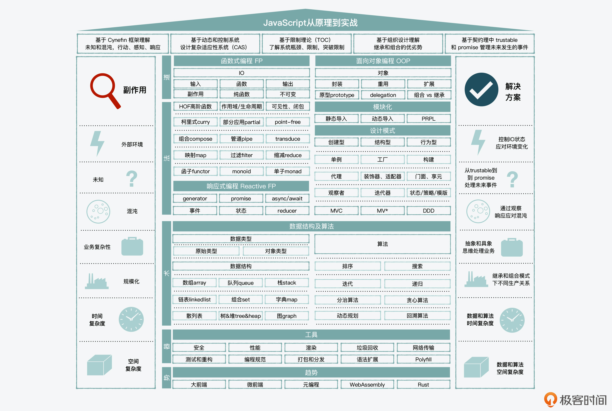
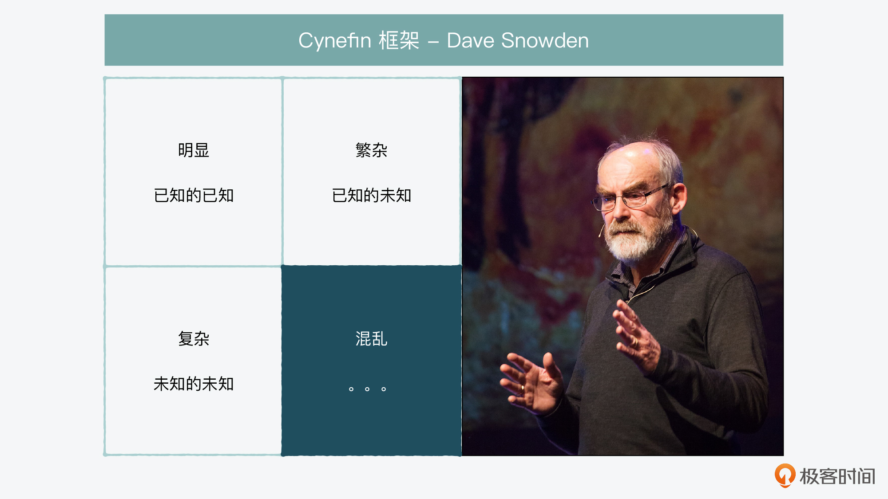
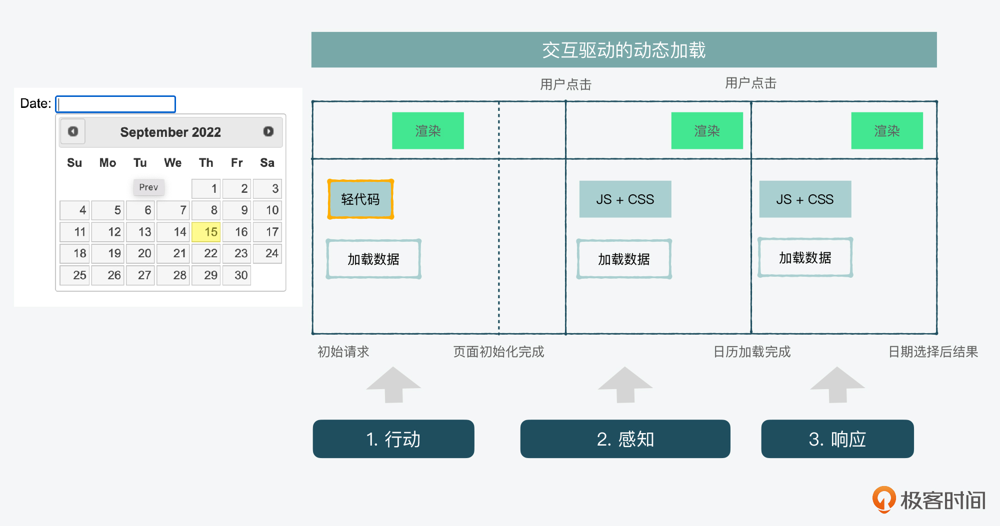
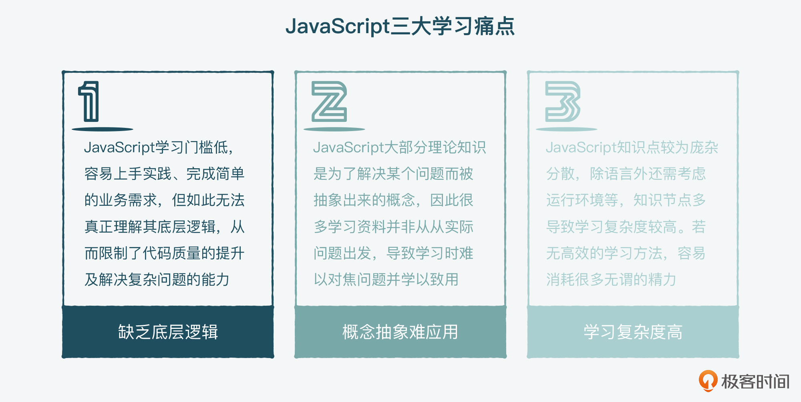
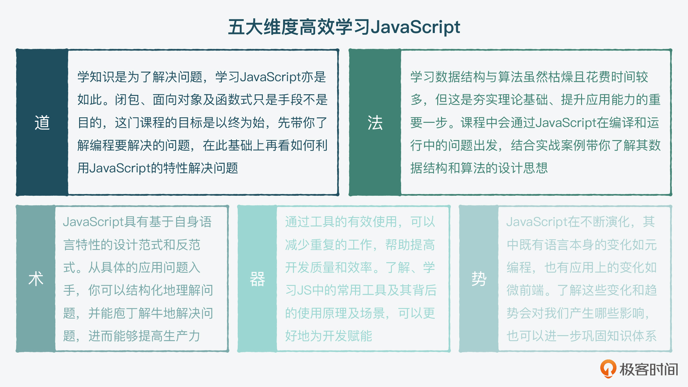

- 00 开篇词 JavaScript的进阶之路.md.html
- 01 函数式vs.面向对象：响应未知和不确定.md.html
- 02 如何通过闭包对象管理程序中状态的变化？.md.html
- 03 如何通过部分应用和柯里化让函数具象化？.md.html
- 04 如何通过组合、管道和reducer让函数抽象化？.md.html
- 05 map、reduce和monad如何围绕值进行操作？.md.html
- 06 如何通过模块化、异步和观察做到动态加载？.md.html
- 07 深入理解对象的私有和静态属性.md.html
- 08 深入理解继承、Delegation和组合.md.html
- 09 面向对象：通过词法作用域和调用点理解this绑定.md.html
- 10 JS有哪8种数据类型，你需要注意什么？.md.html
- 11 通过JS引擎的堆栈了解闭包原理.md.html
- 12 JS语义分析该用迭代还是递归？.md.html
- 13 JS引擎如何实现数组的稳定排序？.md.html
- 14 通过SparkPlug深入了解调用栈.md.html
- 15 如何通过哈希查找JS对象内存地址？.md.html
- 16 为什么环形队列适合做Node数据流缓存？.md.html
- 17 如何通过链表做LRU_LFU缓存？.md.html
- 18 TurboFan如何用图做JS编译优化？.md.html
- 19 通过树和图看如何在无序中找到路径和秩序.md.html
- 20 算法思想：JS中分治、贪心、回溯和动态规划.md.html
- 21 创建型：为什么说Redux可以替代单例状态管理.md.html
- 22 结构型：Vue.js如何通过代理实现响应式编程.md.html
- 23 结构型：通过jQuery看结构型模式.md.html
- 24 行为型：通过观察者、迭代器模式看JS异步回调.md.html
- 25 行为型：模版、策略和状态模式有什么区别？.md.html
- 26 特殊型：前端有哪些处理加载和渲染的特殊“模式”？.md.html
- 27 性能：如何理解JavaScript中的并行、并发？（上）.md.html
- 28 性能：如何理解JavaScript中的并行、并发？（下）.md.html
- 29 性能：通过Orinoco、Jank Busters看垃圾回收.md.html
- 30 网络：从HTTP_1到HTTP_3，你都需要了解什么？.md.html
- 31 安全：JS代码和程序都需要注意哪些安全问题？.md.html
- 32 测试（一）：开发到重构中的测试.md.html
- 33 测试（二）：功能性测试.md.html
- 34 测试（三）：非功能性测试.md.html
- 35 静态类型检查：ESLint语法规则和代码风格的检查.md.html
- 36 Flow：通过Flow类看JS的类型检查.md.html
- 37 包管理和分发：通过NPM做包的管理和分发.md.html
- 38 编译和打包：通过Webpack、Babel做编译和打包.md.html
- 39 语法扩展：通过JSX来做语法扩展.md.html
- 40 Polyfill：通过Polyfill让浏览器提供原生支持.md.html
- 41 微前端：从MVC贫血模式到DDD充血模式.md.html
- 42 大前端：通过一云多端搭建跨PC_移动的平台应用.md.html
- 43 元编程：通过Proxies和Reflect赋能元编程.md.html
- 结束语 JavaScript的未来之路：源于一个以终为始的初心.md.html
- 捐赠
00 开篇词 JavaScript的进阶之路
你好，我是石川，欢迎和我一起学习JavaScript。
JavaScript的前身Mocha，是布兰登·艾克（Brendan Eich）在1995年用10天时间设计出来的。我第一次接触JavaScript，是从它诞生算起的10年后，在学校学习的，那时的网站更多是静态的信息展示类网页。所以当时，JavaScript和它刚发明出来时类似，更多是一门脚本语言。可以说，整个前端在那个年代和之前的很长时间，都被认为是一个很业余的技能。
但随着AJAX在2005年诞生，接着W3C在2006年第一次发布了XHR（XMLHttpRequest）规范草案后，这种情况就改变了。基于AJAX，我们不仅可以开发静态展示的页面，也可以开发动态交互的应用。到这时候，JS才逐渐被重视起来，之后AJAX相关技术也被纳入了网络标准。我第一次开发AJAX相关的应用，是2007年毕业后给雅虎开发的一个集合各种Web API （Flickr, Yahoo Answers，类似知乎）的应用门户。所以，我完美地赶上了它的转折期。
在此之后，JavaScript就从一门简单的脚本语言，发展成了可以用来开发复杂应用的语言。但即使如此，当时的JavaScript本身并没有太大变化，仍然无法像Java或C++一样，拥有强大的标准库，因此开发者们需要自己想办法去解决很多问题，比如当时最大的问题，就是要解决系统兼容性，这也导致当年涌现了很多第三方库。
而我也是在同一时间，接触了开源，把平时自己踩过的坑以及解决方案写成了小工具。再后来，我有幸和Google、Twitter的一些工程师合作，创建了 HTML5 Boilerplate开源项目，为的就是解决一些前端经常遇到的兼容性问题。之后，我在英国出版了一本《HTML5 移动Web开发实战》，以及继续从事一些开源工作，后续推出了开源项目 JavaScript Patterns & Anti-Patterns。
而随着Web应用的进一步发展，我在工作中也面临了更大的挑战。最近几年，我和腾讯、阿里合作了一些大型前端项目。在做项目的过程中，我发现随着应用使用者的大规模增加，很多问题产生的副作用也会呈现指数级上升，性能、安全等非功能性的问题也会不断显露。
举个例子，我曾在项目中负责一个大型订票应用的开发，由于业务流程复杂、业务需求也瞬息万变，因此一个很小的副作用就会造成大量订单问题，这时就要用到纯函数思想中的幂等，来保证任意多次执行结果与一次执行结果相同，避免订单的重复提交。
除了由于业务复杂度、高并发引起的副作用外，在大量访问的情况下，一个很小的资源加载对资源的消耗就是指数级的，那在强调降本增效的今天，能够实现对资源的有效控制，对我们做业务来说是十分关键的一点。比如说，如果通过函数式+响应式编程，我们就可以通过用户的实时需求动态加载资源，从而能够节省不必要的资源预加载成本。
这样算下来，我从接触前端，再到使用JavaScript进行开发工作，已经有十余年的时间。在这个过程中，我遇到过太多前端/JavaScript方面的疑难杂症，因此在接下来的时间里，我会将我的JavaScript实践经验一一分享给你，希望能帮助你建立起系统解决问题的思维、掌握实际处理问题的方法。
为什么要学这门课？
现在，JavaScript早已不是当年的一个脚本语言，随着Web应用和Node.js的兴起、函数式编程的复兴，以及响应式编程开始进入人们视野，让JavaScript看上去更“专业”了。虽然和十几年前相比较，JavaScript也加入了很多功能和语法糖，但是它的核心原理并没有太大变化。
可即使没有太多本质上的变化，JavaScript也仍然具有容易入门但难以进阶的问题。
我认为造成这个问题的原因主要有两个：一是早期写JavaScript的很多程序员的编程基础并不扎实，知识点很杂，导致大家对JS的理解不够深入；二是后来入局的一些大咖，很多都是从其它语言转来的，他们认为一些知识没法分享和讲解。
拿函数式编程中的Monad举例，道格拉斯·克罗克福特（Douglas Crockford，他帮助改良了JavaScript）就曾经说过：Once someone understands Monads, they lose the ability to explain it to anybody else.- 大意是你一旦会用Monad，你就不知道怎么给别人解释它了。
这就使得JavaScript的开发者两极分化很严重，一部分一直停留在入门级，一部分出道即巅峰。
所以这门课的初衷，就是让学习JavaScript的你，能够对这个开始比较不那么“专业”的语言，有一个系统的专业理解。帮助你一步一个脚印，把点连成线，把线连成面，把面搭建起一座空间立体的“思维大厦”。

看到这座“大厦”，你可能也会望而却步，觉得知识体系十分庞杂和分散，学习起来很可怕。不过不用担心，万丈高楼平地起，只要你结合实际，按照我分享的方法掌握了知识的脉络，理解起来、用起来就并不复杂。
那么我的方法是什么呢？下面就跟你具体说道说道。
怎样学才能少走弯路？
很多人认为，编程模式、数据结构和算法可以脱离语言本身，因为无论用什么语言都会用到这些模式。
在我看来，它们确实可以抽象出来，但是基于语言的特点，我们能更好地理解这些模式的应用。毕竟，无论是读别人的代码，还是让机器有效执行程序，“语言”才是我们交流的工具。
函数式编程
打个比方，函数式编程和响应式编程之所以崛起或者说复兴，和实际应用是分不开的。因为在前端开发中，我们的应用面对的是UI客户端，所以应用背后的程序，就需要处理大量的用户和网络触发的事件，并根据事件的状态来做出响应。
而函数式和响应式编程的很多思想，正好可以帮助这一目的的实现，开发者和用户是用脚投票的，所以才出现了复兴。而不是单单基于某个理论，或者要和面向对象比个高下，才得到广泛应用的。
但是我也发现，如果脱离了实际的语言和它解决的问题，来解释编程模式，就会高度抽象，显得比较形而上，还是拿函数式编程中很重要的概念Monad来说明，其官方解释是这样的：
All told, a monad in X is just a monoid in the category of endofunctors of X, with product × replaced by composition of endofunctors and unit set by the identity endofunctor.- 总而言之，X 中的单子只是 X 的内函子类别中的一个monoid，乘积 × 被内函子的组合替换，单位由恒等函子设置。
这样的解释，相信会让想要了解函数式编程的你头皮发麻，更不要说去掌握它的强大功能了。虽然它的解释并没有错，因为这就是一个数学上的概念，需要严谨且客观。但问题是，它和我们做开发有什么关系呢？
那么，要我来说的话，对于“为什么需要函数式和响应式编程”这个问题，用一个很简单的生活例子其实就能解释清楚了。
你应该也有感触，这两年全球范围内黑天鹅事件频发，我们感到世界的秩序在重置，过去我们面对繁杂和复杂，还可以“摸着石头过河”；可是现在，连石头都没有了，我们感到的就是“混乱”。
威尔士学者戴夫·斯诺登（Dave Snowden），在1999年供职于IBM期间，提出过一个Cynefin框架，就是来解决这种“混乱”的。他认为，在面对混乱时，应该按这三步走：行动、感知、响应。

这和我们的应用有什么关系？
我们其实可以结合JS语言对函数式编程的支持，以及它相关领域的前端应用来理解。在前端开发中，人机交互是很复杂的。比如我们加载了一个界面后，根本不知道用户会做出什么反应，或者点击哪个按钮。那我们怎么办呢？其实就是先把初始页面加载下来，也就是第一步，行动。
那么，当用户点击了一个按钮，比如一个日历的时候，我们就进行到了第二步，即感知到用户想要选择一个日期。所以，我们就可以给这个按钮加上事件处理器（event handler），完成相关的日历组件或模块加载，通过之前“记住”的用户需求，展示加载后的日历，这也就是第三步，响应。

在这个过程当中，我们要通过工具来处理很多事，比如事件处理、状态管理。函数就是这个工具，它的核心就是IO输入输出。我们给函数一个输入值（数据结构），它进行处理（算法），然后给我们一个输出值（返回值）。
而Monad的核心，就是围绕一个“值”来组织各种方法。所以无论是JavaScript本身带的 array.map，还是我们常用的React.js里面的observer、reducer， 其实万变不离其宗，都是在复杂系统、不确定性和混沌中，帮助我们去行动、感知和响应，解决各种副作用，提高性能的方法和工具。
所以，函数式、响应式编程不是远在天边的概念，而是近在眼前的生产力，如果你没有看到，可能只是缺少一双发现它们的眼睛。
面向对象编程
如果说在使用函数式编程的时候，我们考虑的是“生产力”，那在使用面向对象的时候，我们考虑的更多是“生产关系”。我想你在学习JavaScript之前可能也有其它的语言背景，会习惯性地将class等概念照搬到JavaScript，而忽略JavaScript本身的一些特点。
比如JavaScript中的继承，是基于原型链的继承，更偏向delegation而不是inheritance。即使在面向对象设计本身，也是追求多用组合少用继承。所以，我们可以看看JavaScript在面向对象中，有哪些自己的特点，来组织生产关系。
在课程中，我们并不会用二极管的思维去说哪一种模式就是银弹，而是会根据实际情况，找到合适的方法。
数据结构和算法
说到数据结构和算法，相信无论是刷Leetcode还是看极客时间上的课程，你都可以掌握，而且虽然不能说绝对，但算法确实相对独立于语言。有朋友曾经问过我，学习数据结构和算法应不应该刷题，我其实认为应该，有的时候哪怕是应试，也是学习的一种方法。
但是在讲这部分知识的时候，我并不会应试地讲，因为你完全可以在市面上找到类似的内容。在课程里，我希望能带你在学习JavaScript的引擎、浏览器和编译原理的过程中，来理解这些数据结构和算法，这样你更能理解这门语言的运行机制和原理，起到和专门讲算法的课程相辅相成的作用。比如你如果不明白stack、queue、heap，就几乎很难理解哪怕比较基础的闭包和事件循环，更不要说基于这些机制来做程序开发时的考量。
这门课的设计思路
那么，基于以上思考，我也总结了学习JavaScript的几大痛点。
首先，如前面所说，正是因为JavaScript是一门学习门槛不高的语言，虽然上手快，但是容易缺乏对底层逻辑的理解，这会从很大程度上限制我们的代码质量和解决更复杂问题的能力。
其次，也会导致很多理论知识，我们很难学以致用。
最后，就是由于前端涉及的知识点非常广，比如你要理解JavaScript的运行机制，就要了解计算机组成、引擎、浏览器和编译，如果每个知识点都跳来跳去地看，消耗的无效精力可能会是几倍、几十倍。

所以在设计这门课的时候，我主要划分了五个模块来解决这些问题。
- JavaScript之道
第一个模块，我们先来讲讲函数式和面向对象的编程模式，毕竟其中的一些核心概念或元认知（metacognition）即使不是恒久不变，也至少是到目前为止，经受住了时间考验的核心理论和实践。因此，当你理解和掌握了这两类核心编程范式之后，你就知道要如何结合JavaScript的特性进行取长补短了，也能够因地制宜地解决实际问题了。
- JavaScript之法
接下来，我会带你来学习JavaScript的底层逻辑和所用到的数据结构与算法，以此帮助你写出更高效的代码。我会从大量的开源项目等案例出发，带你了解、学习和掌握JS引擎及浏览器在编译和运行时的一些特点，帮助你达成对这些知识点的真正理解，最后能够融会贯通。这样你在使用JS的一些功能，如排序或者做代码优化的时候，就能够更好地抓住重点，管理预期。
- JavaScript之术
在理解了JavaScript的数据结构与算法之后，我们还要一起来看看它用到的设计模式。前面我也强调过JS编程模式（函数式+响应式及面向对象）的重要性，而设计模式其实是前面模块的延续。这个部分，我会结合一些三方的库，来帮助你理解和掌握如何通过设计模式进一步提高“生产力”，优化“生产关系”。
- JavaScript之器
我们知道，通过工具的有效使用，可以减少重复的工作，帮助我们提高开发质量和效率。因此在这个模块中，我们依然是从案例出发，来了解、学习JavaScript中的常用工具及其背后的使用原理、使用场景，让你能够通过对原理和实践经验的理解，更好地为开发赋能。
- JavaScript之势
我们说唯一不变的就是变化本身，通过前面对JavaScript知识体系的系统性理解，最后，我们也来看看前端一些新的技术趋势，了解下这些变化和趋势会对我们产生哪些影响，以此进一步巩固知识体系，进阶为一名JavaScript语言应用强者。

写在最后
最后我想说，学习是一件需要长期坚持做的事。我希望在接下来的更新时间里，你能坚持每讲都学完，并在评论区参与讨论。不过我也知道，这说起来容易，做起来其实很难，毕竟学习本身就是一件反人性的事儿。
那如果这么难，如何才能真正坚持学习课程呢？我没有标准答案，但是我想结合自己的一些经验，来给你分享一些可行的方法，希望能对你有所帮助。
- 第一就是在学习一节知识时，尽量一鼓作气，有些概念即使模糊，你硬着头皮看下去也比停顿去深入了解某个点强。实在遇到困难的地方，你可以简单查下资料，但只要查到刚刚能让你继续往下读的内容即可，千万不要偏离了每节课的主题。
- 第二是可以反馈意见，我们承诺会帮助；如果你对某个知识点有更简单的描述、更独特的见解，也欢迎你在评论区多分享。
- 第三是可以让你的好朋友也一起学习课程，一起成长。读万卷书，不如行万里路，行万里路有时不如沟通和交流，这就像是编程中的Peer programming。
另外，为了让你学起来没那么难，我也借用函数式和面向对象编程模式中常用的两个思想，“声明式”和“基于接口而非实现”来设计这门课。也就是把这个过程当做一个对话，尽量用平实的语言、易读的代码和直观的图片，来帮助你理解一些生涩难懂的概念。
最后，也感谢你的信任，希望通过这门课，我们可以一起和时间做朋友，共同成长！通过对话，我们彼此也能成为终身学习之路上的好朋友。
延伸阅读
© 2019 - 2023 Liangliang Lee. Powered by gin and hexo-theme-book.